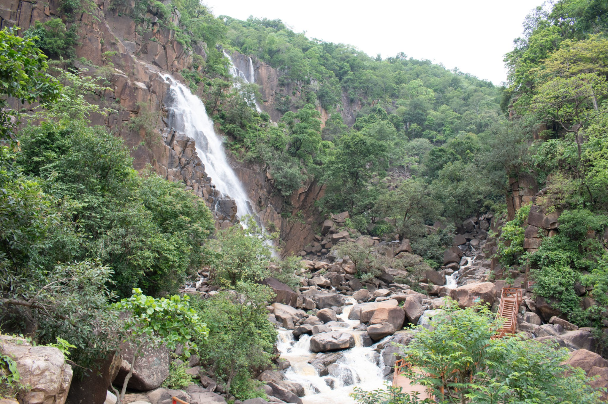
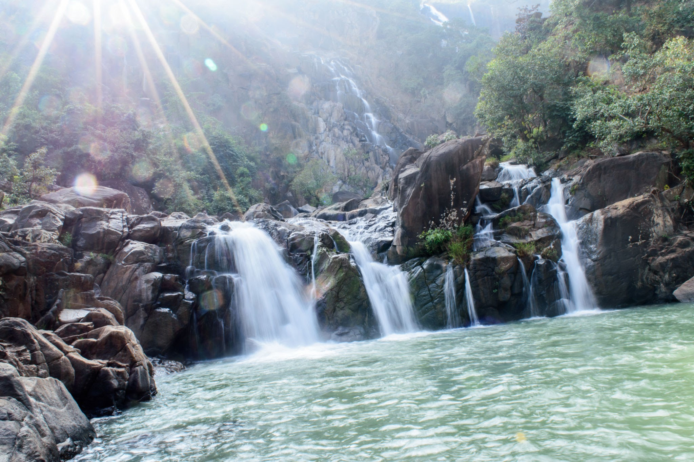
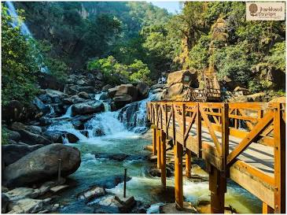
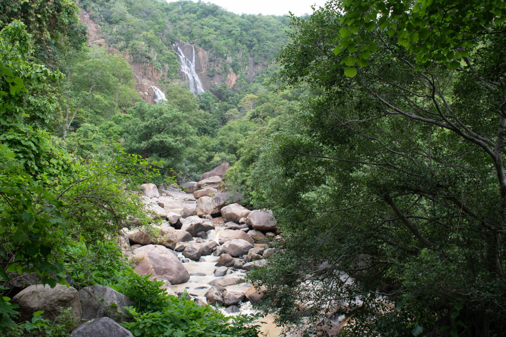

Reported approximate total elevation of the waterfall.

JHARKHAND • WATERFALL EXPLORER
Lodh Falls
A dramatic cascade hidden within Jharkhand's forested landscape.
Explore Lodh Falls, its dramatic elevation, forest surroundings, rocky terrain and changing seasonal flow.
SCROLL TO EXPLORE
↓
AT A GLANCE
Lodh Falls in Focus
The waterfall is associated with the Budha River system.
Located in the Latehar region of Jharkhand.
Rainfall significantly strengthens seasonal flow.

01
THE GREAT DESCENT
ABOUT LODH FALLS
A powerful cascade in a forest landscape
Lodh Falls is a prominent waterfall in Jharkhand, surrounded by the forests and rugged terrain of the region. Its pronounced elevation change gives the waterfall a dramatic vertical character.
Seasonal rainfall changes both the volume and visual character of the waterfall, with the monsoon generally producing the strongest flow.
LOCATION
Latehar District, Jharkhand
WATER SOURCE
Budha River
HEIGHT
≈ 143 metres
SETTING
Forested & rocky landscape
SCALE OF THE FALL
Visualize the Elevation
Adjust the slider to explore the reported scale of Lodh Falls.
143 m
0 m
143
metres
Reported approximate total elevation of Lodh Falls.
FOREST & GEOLOGY
Water, rock and forest
Lodh Falls is surrounded by a forested landscape, giving the waterfall a strong connection with the natural environment of Jharkhand.
Rocky surfaces and changes in elevation shape the waterfall's dramatic descent. Long-term erosion by flowing water contributes to the rugged appearance of the surrounding terrain.

02
ROCKY SURROUNDINGS
CHANGE WITH THE WEATHER
Lodh Through the Seasons
Compare the seasonal character of the waterfall.
 MONSOON
MONSOON
PEAK FLOW
Powerful and dramatic
Monsoon rainfall increases water flow and gives Lodh Falls its most dramatic seasonal appearance.
RELATIVE FLOW
100%
EXPLORE THE LANDSCAPE
Landscape Explorer
Switch between different views of the Lodh Falls environment.
01
/ 03
SELECTED LANDSCAPE
Full Waterfall View
A broad view reveals the waterfall's vertical descent together with the surrounding landscape.
BEYOND THE WATERFALL
Forest Around Lodh
Discover the forest and rocky environment surrounding the waterfall.

EXPLORE MORE
Nearby Attractions
Discover more natural destinations around Lodh Falls.
Netarhat
A scenic hill destination known for forests, viewpoints and memorable sunsets.
Koel View Point
A scenic viewpoint offering expansive views across the forested landscape.
Magnolia Point
A popular Netarhat viewpoint associated with dramatic evening landscapes.
Upper Ghaghri Falls
Another waterfall destination within the forested Netarhat region.
TRAVEL TIP
Best Time to Visit
The monsoon and the months immediately after it generally provide the most impressive waterfall flow. Always check local weather and access conditions before travelling.
RECOMMENDED
MONSOON
Strong seasonal flow
FIND LODH FALLS
Location & Map
Explore the location of Lodh Falls in Jharkhand.
⌖
Lodh Falls
Latehar, Jharkhand, India
RESEARCH & REFERENCES
Sources & Credits
References and image credits used for this explorer.
IMAGE CREDITS
Images used on this page should be credited to their respective photographers or source websites. Replace the placeholders below with the actual source and photographer information for each image before submitting the pull request.
- Hero photograph — Source / Photographer: Add verified credit
- Full waterfall photograph — Source / Photographer: Add verified credit
- Forest landscape — Source / Photographer: Add verified credit
- Rocky surroundings — Source / Photographer: Add verified credit